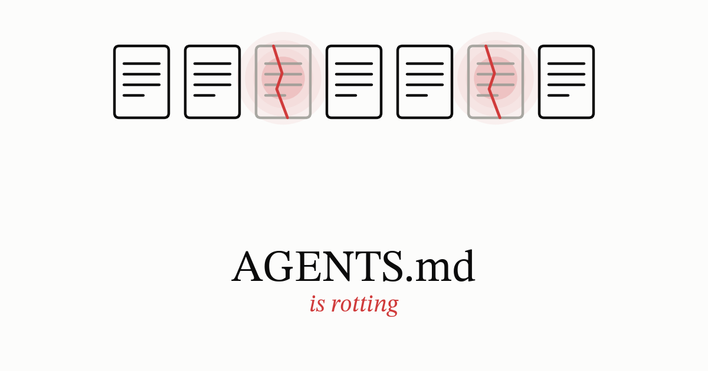

A file at the root of your repository tells an AI agent how to work there. AGENTS.md, CLAUDE.md, GEMINI.md, .cursorrules, copilot-instructions.md, whatever your tooling calls it. If you have been running agents for more than a few months, that file has grown and is at least partially false. The problem is maintenance, not writing.
The file
I made up parts of this:
# Notes for AI agents working in this repo
Please be careful. This code ships to customers.
## Setup
Install dependencies with `pip install -r requirements.txt`.
Run `./scripts/bootstrap.sh` before anything else.
## Testing
Always run the full test suite before proposing a change.
If the suite takes too long, use your judgment about which parts to skip.
## Git
Never force-push.
Force-pushing to your own feature branch is fine, just not to main.
Squash your commits.
## Crypto
Use AES-256-GCM via the platform's default crypto library for encryption at rest.
Sign release artifacts with SHA-1.
Do not touch src/gen — after the March incident this must be left alone.
Be careful when changing the test fixtures.
Check with the team before editing the CI config.
## Style
Follow the existing code style.
It would be nice if you could add tests for new code.It reads like a helpful note from a colleague, until you check it against the repo — then the cracks show.
The default crypto library is right for the standard build, and the FIPS build isn’t allowed to use it. FIPS certifies the validated module, not the algorithm. Nothing stops the agent from calling the familiar function anyway, and it will compile and encrypt the data just fine. It simply isn’t the certified path.
The Git section contradicts itself: never force-push, and then force-pushing to your own feature branch is fine. The agent does not know which one wins.
bootstrap.shmoved into the Makefile last year and was deleted, but the line survived. The team banned SHA-1 for new signatures two quarters ago, years too late, and the file never got the memo. The March incident was two Marches ago.Then the sentences that are not instructions at all: be careful, use your judgment, check with the team, it would be nice if you could add tests. Bad documentation produces the same sentences. Consult your system administrator. Use caution when modifying this value. I have written both. None of them can be followed or checked.
Whichever agent you run, the file is text in a prompt, not a parsed config. Claude Code’s documentation says so plainly: “no guarantee of strict compliance, especially for vague or conflicting instructions” (Anthropic 2026). The file above has both problems.
How bad is it
ETH Zurich found that adding a context file did not generally improve task success, and raised inference cost by more than 20% on average. They tested on SWE-bench tasks and on a benchmark of repositories that already had hand-written files, and the result held across models and agents, whether the file was hand-written or generated (Gloaguen et al. 2026).1 The same study’s trace analysis shows just how mechanically agents comply: a tool got used far more often in the instances where the context file named it than in the instances where it didn’t.
On focused pull requests, a second study found the opposite on cost: runs with a context file finished with roughly 29% better median runtime and 17% better token use than runs without one (Lulla et al. 2026). The two studies aren’t testing the same kind of task. An open bug on SWE-bench is something an agent has never seen before; a focused pull request is usually a change the author already understands. A context file can plausibly make an agent faster at work it’s already been pointed toward. It doesn’t make the agent better at work it has to figure out on its own.
Line the two up and the real takeaway is smaller than either study on its own: cost tracks how familiar the task already is, and only ETH actually measured whether the work gets done better — it found no reliable improvement there either. On an unfamiliar problem, a file that earns nothing still costs tokens, and a false line in it gets followed on top of that.
Why it rots
Every fault in that file has the same cause: it has no lifecycle.
Nobody owns it, so nobody’s on the hook when it drifts. Nothing generates it, which means when a variant is needed, someone just copies the file by hand. Nothing tests it either — a path deleted last year still looks current. And nothing fails when a rule in it goes wrong: it just sits there, wrong, with nobody watching. Put together, that’s four things code has and this file doesn’t: an owner, a generator, a test, and a failure signal.
Part of this is plain incentive. Owning the file gets nobody a ticket or a review credit, and blocking a merge over use caution costs the reviewer more than just waving it through. So nobody signs up to own it, and vague rules never get cleared out.
Dead paths, stale versions and wrong commands are mechanical faults — a script can check every path, command and version the file names, and it’ll still be checking them next year. Contradictions and vague rules aren’t mechanical. No tool reads never force-push against force-pushing to your own feature branch is fine and calls it a conflict, and none will tell you be careful isn’t an instruction. Those need a person.
Auditable, then enforced
A rule is auditable when you can tell from the diff whether it held. This one is not:
Be careful when changing the test fixtures.
This one is:
Do not edit anything under
tests/fixtures/. If a test needs a different fixture, stop and say which fixture and why.
Being auditable still doesn’t make a rule enforced. An instruction file is text in a context window, competing with everything else in it, and on a long session it can lose. Better models do not fix this. A good guess just makes the failure quieter, because nobody checks a guess that worked.
So sort by consequence. If a violation would fail the build, put it in the build: every agent ships a hook or permission layer, and pre-commit and CI were there before any of them. The file keeps what a reviewer would query and no gate would catch.
The fixture rule belongs in the file. A pre-commit hook that rejects any edit under src/gen does not depend on the agent cooperating.
Variants, without four copies
Instructions differ by version and by variant — your own product’s 6.1 needs different guidance from 6.2, just as the standard build needs different crypto guidance from the FIPS one.
If your variants map to directories, the tooling already handles it. Nested AGENTS.md files scope to their own subtree, and the more specific one wins on conflict — the same mental model as .gitignore.2 Most agents also take imported or path-scoped rules on top of that.
They often do not map. Standard against FIPS is not a directory split, and neither is 6.1 against 6.2. So people copy the file and edit the copy. After a year there are four of them, three stale, and nobody can say which one the agent loaded on a given run. Git will not catch it: four divergent files are not an error.
Documentation toolchains have a name for this problem: conditional compilation, applied to prose. They borrowed ifdef from the C preprocessor for the same reason it exists there: one source, built per target, instead of four copies drifting apart on their own. Write one source with conditionals and generate the per-target file:
== Cryptographic primitives
ifdef::standard[]
Use `AES-256-GCM` via the platform's default crypto library.
endif::[]
ifdef::fips[]
Do not use the platform's default crypto library in this build.
It runs the same algorithm as the validated module but isn't certified — call the module's AES-256-GCM implementation directly instead.
endif::[]Build per target and the agent gets a plain AGENTS.md with no conditionals in it. Change one path and the other is on the adjacent line.
The generated file rots too, so treat it like any other generated artifact: a build target that produces it, a CI job that regenerates and fails on a diff, and the output in .gitignore so nobody edits the artifact instead of the source.
What each approach costs
| Approach | Handles | Costs | Revisit when |
|---|---|---|---|
| Leave it, delete quarterly | Drift, contradictions | Nothing but discipline. No variant support | You add a second target |
| Nested files | Variants that map to directories | A nested file can silently override a rule from the root | A rule has to hold everywhere |
| Generate from one source | Variants by product or version | A build target, a CI check, one more thing that can break the build | You’re down to one target again |
| Hook or CI gate | Rules that must hold | Code to maintain, and it will block legitimate work sometimes | The gate fires more on false positives than real ones |
Two of these rows are cheap, and they buy most of the value. Deleting on a schedule costs nothing and fixes contradictions, dead paths and stale versions. Nested files cost nothing extra either, once your variants actually map to directories — the tooling was already going to do that for you. For one repo, one target and two people, those two rows are the whole answer. Generation is the expensive row: worth it once you’re at two targets, hard to justify at one, and I have not seen anyone run it for instruction files specifically, so treat it as a mechanism rather than a practice.
What to do this week
- Find out what actually loads. Claude Code lists the files in effect under
/context(Anthropic 2026); Codex can log its instruction chain (OpenAI 2026). A file missing from that list is invisible to the model. Codex also caps instruction text at 32 KiB by default and truncates past that, silently.3 - Diff the file against reality. Every path, command and version number it names. Write it as a script the first time, because you will run it again. This is the pass that finds
bootstrap.sh. - Delete. Anything the model already does, anything contradicted elsewhere, anything you cannot date.
- Add an owner and a date.
Owner: platform team. Reviewed: 2026-08-14.Without them nobody can tell a live rule from a dead one. - Rewrite the vague rules as checkable ones, and move the absolute ones into a hook.
- Only then, if you have more than one target, set up generation with the CI diff check.
Steps 1 to 4 are an afternoon and cover most of the damage, and step 5 just keeps going, one rule at a time. Step 6 needs a decision first.
How you know it worked
The file loads. Check /context or your agent’s equivalent, and check the byte count against your tool’s cap.
The file is true, mechanically. The script from step 2 still asserts every path, command and version exists. If you’ve set up generation, CI regenerates and fails on a diff too. Either way, nobody has to remember to look.
Nothing checks the other half. No script reads two rules against each other and flags the contradiction, and none reads it would be nice if you could add tests and tells you that’s not an instruction. This still needs a person, and a calendar entry. It’s the half that gets skipped.
The hard rules hold. Try to violate them. Edit something under src/gen and confirm the hook rejects it.
Whether the file helps at all is not testable with what you have. The two studies point in different directions: cost went up in one, down in the other. Settling it for your own team means running A/B tests on tasks with known-good outcomes. What you can actually claim is narrower: the file loads on every run either way, and it is now true rather than false.
The failure to watch for is a stale rule followed correctly. Go back to that ETH trace analysis. It measured how often a tool got used — not whether the file was still right to name it. A stale rule gets followed just like a current one, so it looks like success too. That’s why it survives review. The date on the file is what catches it.
Solved twice already
ifdef-style conditionals are a straight borrow from engineering: documentation toolchains took the idea from the C preprocessor because keeping prose in sync with the code it lives next to is easier when both use the same trick for the same problem.
The broader discipline, though, belongs to documentation itself. Technical writing has its own long answer to keeping a large body of text true across versions and products: single-sourcing, structured authoring, versioned doc builds. Conditional text is just one tool inside that toolbox. Applying it to prose is a different job than applying it to code: you cannot type-check a sentence or unit-test a paragraph.
Instruction files are the same problem on a smaller scale, and they need the same two things: a schedule, and an owner. Most repositories have assigned neither.
References
Footnotes
Hand-written files moved success up a little — about 4% on average, for three of the four agents tested. LLM-generated files moved it down, in most of the settings tested. Call both effects noise: neither was large or consistent enough to justify the added cost.↩︎
More precisely, at least for Codex: it concatenates every ancestor
AGENTS.mdfrom the project root down to the working directory, with the nearest file placed last so it overrides on conflict. A rule in the root file still applies anywhere a more specific file doesn’t override it. Claude Code’s CLAUDE.md hierarchy and Cursor’s rules work the same way: additive, with the more specific file winning only where it actually conflicts.↩︎The setting is
project_doc_max_bytes, defaulting to 32 KiB. Codex logs a warning internally when it truncates, but nothing surfaces that warning in the interactive CLI — which is why it reads as silent in practice.↩︎
Citation
@online{sarkar2026,
author = {Sarkar, Souvik},
title = {Your {AGENTS.md} Is Rotting},
date = {2026-09-11},
url = {https://cuimri.com/posts/agents-md-is-rotting/},
langid = {en}
}